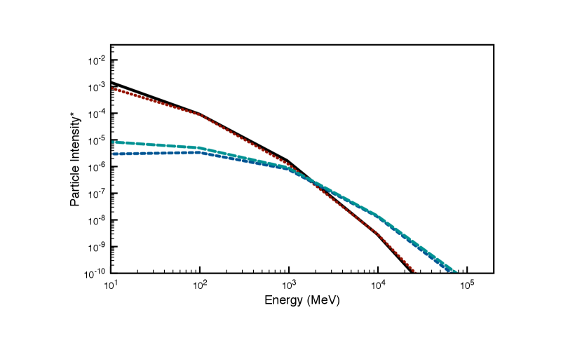
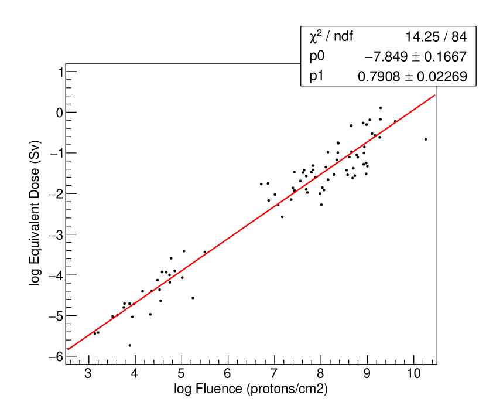
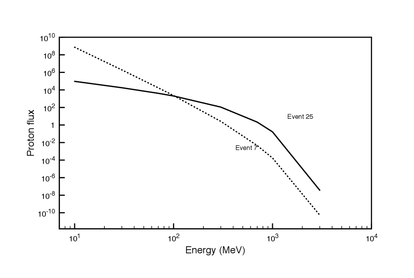
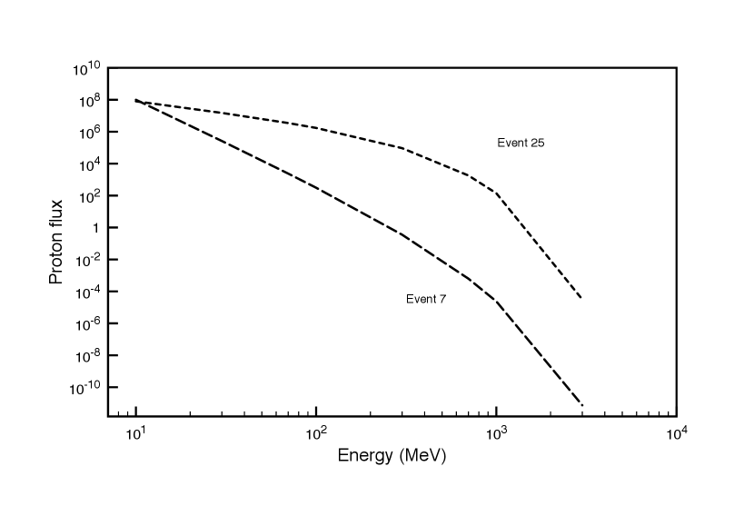
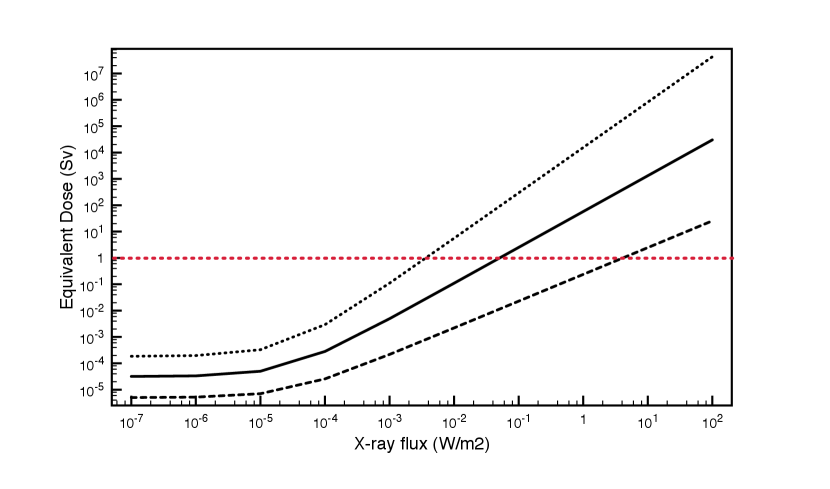

نمذجة جرعة الإشعاع على سطح المريخ الناجمة عن أحداث البروتونات الشمسية
الملخص
يمكن أن تسبب أحداث البروتونات الشمسية (SPEs) زيادات مفاجئة وكبيرة في جرعة الإشعاع على سطح المريخ. وتتوفر أرصاد لتأثير SPEs في سطح المريخ من الأقمار الاصطناعية والكواشف السطحية، غير أن مجموعة البيانات محدودة جداً زمنياً ( 20 سنة)، كما أن نطاق الطاقة محدود الاتساع، مما يجعلها غير كافية لتقدير أثر الأحداث الكبرى على سطح المريخ. ومن جهة أخرى، تتوافر على نطاق واسع بيانات طويلة الأمد عن SPEs المؤثرة في الأرض والممتدة عبر مجال واسع من الطاقة، ويمكن استخدامها لتقدير أثر الأحداث الكبرى على المريخ على مقاييس زمنية طويلة. في هذا العمل، نأخذ SPEs كبرى رُصدت خلال العقود القليلة الماضية على الأرض (1956 - 2014)، إلى جانب أرصاد PAMELA (2006 - 2014)، ونستخدم شيفرة مونت كارلو GEANT4 لحساب جرعة الإشعاع على سطح المريخ. ندرس مساهمة فيض البروتونات والشكل الطيفي للأحداث في جرعة الإشعاع السطحية، ونقدّر أثر SPEs كبرى محتملة على سطح المريخ في المستقبل. لهذه النتائج آثار مهمة في الاستكشاف البشري المخطط للمريخ. وبوجه عام نجد أن جرعة الإشعاع من الأحداث المتطرفة يمكن أن يكون لها تأثير كبير في صحة رواد الفضاء، وفي سيناريوهات نادرة تمثل أسوأ الحالات يمكن أن تبلغ الجرعة المقدرة حتى مستويات قاتلة.
20 سنة)، كما أن نطاق الطاقة محدود الاتساع، مما يجعلها غير كافية لتقدير أثر الأحداث الكبرى على سطح المريخ. ومن جهة أخرى، تتوافر على نطاق واسع بيانات طويلة الأمد عن SPEs المؤثرة في الأرض والممتدة عبر مجال واسع من الطاقة، ويمكن استخدامها لتقدير أثر الأحداث الكبرى على المريخ على مقاييس زمنية طويلة. في هذا العمل، نأخذ SPEs كبرى رُصدت خلال العقود القليلة الماضية على الأرض (1956 - 2014)، إلى جانب أرصاد PAMELA (2006 - 2014)، ونستخدم شيفرة مونت كارلو GEANT4 لحساب جرعة الإشعاع على سطح المريخ. ندرس مساهمة فيض البروتونات والشكل الطيفي للأحداث في جرعة الإشعاع السطحية، ونقدّر أثر SPEs كبرى محتملة على سطح المريخ في المستقبل. لهذه النتائج آثار مهمة في الاستكشاف البشري المخطط للمريخ. وبوجه عام نجد أن جرعة الإشعاع من الأحداث المتطرفة يمكن أن يكون لها تأثير كبير في صحة رواد الفضاء، وفي سيناريوهات نادرة تمثل أسوأ الحالات يمكن أن تبلغ الجرعة المقدرة حتى مستويات قاتلة.
1 مقدمة
يؤثر طقس الفضاء في الغلاف الجوي للمريخ بتغيير كيميائه والتسبب في تعريته (Jakosky et al., 2015; Atri, 2016a). ويكتسب التعرض الإشعاعي الناجم عن طقس الفضاء للأقمار الاصطناعية وربما لرواد الفضاء أهمية كبيرة في استكشاف الفضاء، ولا سيما الاستكشاف البشري المخطط للمريخ (Cucinotta et al., 2001). خلال السنوات القليلة الماضية، ازداد التركيز على إمكانية إرسال بعثات مأهولة إلى المريخ، ويتمثل أحد العوائق الرئيسة في مثل هذه البعثات في الآثار الضارة للإشعاع المؤين (الجسيمات المشحونة) في صحة رواد الفضاء (Hellweg and Baumstark-Khan, 2007). وخلافاً للأرض، يمتلك المريخ غلافاً جوياً رقيقاً (نحو 2% من الكثافة العمودية مقارنة بالأرض) ولا يمتلك مجالاً مغناطيسياً عالمياً ذاتياً يقيه من الجسيمات المشحونة. ويؤدي اجتماع هذين العاملين إلى تعريض سطح المريخ لجرعة إشعاعية عالية من الفيض الخلفي للأشعة الكونية المجرية (GCRs) (Saganti et al., 2004; Gronoff et al., 2015) ومن الأحداث الشمسية المتقطعة (Townsend et al., 2011). لذلك فإن فهم بيئة الإشعاع المريخية طويلة الأمد في سياق أحداث طقس الفضاء أمر حيوي لتخطيط أنشطة الاستكشاف البشري على الكوكب.
وفي حين يمكن حجب الانبعاث الشمسي في نطاق الأشعة فوق البنفسجية القصوى (XUV) بسهولة بواسطة صفيحة واقية رقيقة، فإن الجسيمات المشحونة النشطة ( 1 GeV) قادرة على اختراق الدرع، والخضوع لتفاعلات هادرونية، وإنتاج جسيمات ثانوية مثل الإلكترونات والميونات والنيوترونات. ومن بين جميع الجسيمات الثانوية الناتجة من هذه التفاعلات، تُعد النيوترونات من أخطرها على صحة الإنسان (Mountford and Temperton, 1992). ويمكن للجسيمات الثانوية، تبعاً لجرعتها، أن تسبب أضراراً بيولوجية غير قابلة للإصلاح لرواد الفضاء، وأن تُلحق أيضاً ضرراً بإلكترونيات المركبات الفضائية. ومن ثم فمن المهم نمذجة أثر أحداث طقس الفضاء في جرعة الإشعاع على سطح المريخ وتبعاتها على الاستكشاف البشري للفضاء. ومن أهم الأدوات لهذا الغرض كاشف تقييم الإشعاع (RAD) Hassler et al. (2012) على متن العربة الجوالة Curiosity التابعة لمختبر علوم المريخ (MSL)، الذي يقيس الجرعات الإشعاعية على سطح المريخ منذ 2012. ومع أنه لم تقع أحداث بروتونات شمسية (SPEs) كبرى كثيرة منذ تشغيل RAD بسبب انخفاض النشاط الشمسي، فإن قياساته للجرعة الإشعاعية الخلفية من GCRs ذات قيمة عالية. ويمكن استخدام حساب جرعة الإشعاع الناجمة عن GCRs المقابلة لفيض GCR المقاس والجرعة المقاسة للتحقق من صحة النماذج العددية، التي يمكن استخدامها بعد ذلك لنمذجة أثر SPEs على سطح المريخ بدقة.
1 GeV) قادرة على اختراق الدرع، والخضوع لتفاعلات هادرونية، وإنتاج جسيمات ثانوية مثل الإلكترونات والميونات والنيوترونات. ومن بين جميع الجسيمات الثانوية الناتجة من هذه التفاعلات، تُعد النيوترونات من أخطرها على صحة الإنسان (Mountford and Temperton, 1992). ويمكن للجسيمات الثانوية، تبعاً لجرعتها، أن تسبب أضراراً بيولوجية غير قابلة للإصلاح لرواد الفضاء، وأن تُلحق أيضاً ضرراً بإلكترونيات المركبات الفضائية. ومن ثم فمن المهم نمذجة أثر أحداث طقس الفضاء في جرعة الإشعاع على سطح المريخ وتبعاتها على الاستكشاف البشري للفضاء. ومن أهم الأدوات لهذا الغرض كاشف تقييم الإشعاع (RAD) Hassler et al. (2012) على متن العربة الجوالة Curiosity التابعة لمختبر علوم المريخ (MSL)، الذي يقيس الجرعات الإشعاعية على سطح المريخ منذ 2012. ومع أنه لم تقع أحداث بروتونات شمسية (SPEs) كبرى كثيرة منذ تشغيل RAD بسبب انخفاض النشاط الشمسي، فإن قياساته للجرعة الإشعاعية الخلفية من GCRs ذات قيمة عالية. ويمكن استخدام حساب جرعة الإشعاع الناجمة عن GCRs المقابلة لفيض GCR المقاس والجرعة المقاسة للتحقق من صحة النماذج العددية، التي يمكن استخدامها بعد ذلك لنمذجة أثر SPEs على سطح المريخ بدقة.
توجد أرصاد لعدة SPEs صغيرة خلال العقد الماضي من مدار المريخ وسطحه (Larson et al., 2015; Guo et al., 2015). وقد كانت هذه البيانات قيّمة في فهم أثر SPEs في سطح المريخ واستُخدمت في عدد من الدراسات المهمة؛ فعلى سبيل المثال استخدم Matthiä et al. (2016) GEANT4 لنمذجة جرعة الإشعاع من الفيض الخلفي لـ GCRs ونجح في مطابقتها مع قياسات RAD. واستخدم Guo et al. (2018) بيانات أقمار اصطناعية امتدت 20 سنة (SOHO/EPIN) عن SPEs أرضية ونمذج جرعة الإشعاع على سطح المريخ. وعلى الرغم من أن هذا النهج مفيد لتقدير البيئة الإشعاعية السطحية للأحداث الصغيرة، فإن عيبه الرئيس هو غياب أرصاد الأحداث الكبرى التي تحدث عادة على مقاييس زمنية أطول. ولا تلتقط هذه النافذة الزمنية الأصغر الاتساع الكامل للأحداث من حيث الشدة والمدة وأطياف الجسيمات. إضافة إلى ذلك، تقاس أطياف الطاقة على هذه الأقمار ضمن مجال طاقة محدود بدرجة ملحوظة (مثلاً يقيس EPHIN البروتونات بين 4 - 50 MeV)، ولا يغطي الطيف الكامل للجسيمات المشحونة المقدّر انبعاثها في SPEs (10 MeV - 10 GeV) (Usoskin et al., 2011). ومن جهة أخرى، دُرست الأحداث الكبرى بتفصيل كبير على الأرض خلال العقود العديدة الماضية. وتتوفر بيانات التحسينات عند مستوى سطح الأرض (GLEs) لفترات زمنية أطول، وتمتد أيضاً عبر مجال طاقة أوسع بكثير يغطي طيف الحدث بأكمله، بخلاف بيانات الأقمار الاصطناعية (Tylka and Dietrich, 2009). في هذا العمل نستخدم بيانات أرضية وبيانات أقمار اصطناعية عن SPEs من 1956 إلى 2014، وننمذج تفاعلها مع الغلاف الجوي للمريخ.
في القسم التالي، نصف منهجية النمذجة العددية، وتفاصيل التحقق من صحة الشيفرة، وحسابات جرعة الإشعاع السطحية. وفي قسم النتائج، نناقش كيف درسنا التغير في أطياف الأحداث بتطبيع فيض الحدث. ثم نستخدم علاقة تحجيم لتقدير الجرعة الإشعاعية في حالة أحداث شبيهة بحدث كارينغتون والتوهجات الفائقة. وفي الاستنتاجات نناقش كيف يؤثر التعرض الإشعاعي المعزز من SPEs في صحة رواد الفضاء في البعثات المأهولة المستقبلية إلى المريخ.
2 النمذجة العددية
نستخدم في حساباتنا الأطياف المقاسة بواسطة بعثة حمولة استكشاف المادة المضادة والمادة والفيزياء الفلكية للنوى الخفيفة (PAMELA) (Bruno et al., 2018)، والأطياف المقدرة من SPEs تاريخية (Tylka and Dietrich, 2009)، وحدثاً واحداً قيس بواسطة كاشف تقييم الإشعاع (سبتمبر 2017). وقد حُللت أحداث عددها 30 قاستها PAMELA بين يوليو 2006 وسبتمبر 2014، وعُرضت بصيغة بارامترية لبروتونات ذات طاقات تمتد من 80 MeV إلى 3 GeV في Bruno et al. (2018). يُعطى طيف قانون القدرة بالعلاقة:
| (1) |
حيث إن  هو الدليل الطيفي، وتُضبط طاقة التحجيم ES على 80 MeV، وهي عتبة طاقة PAMELA، و E0 هي طاقة الانقلاب، أما A فهي ثابت التطبيع. وقد نُمذجت أطياف البروتونات لـ SPEs التاريخية من 1956 إلى 2012 بصيغة بارامترية بواسطة Tylka and Dietrich (2009). وتمثل الأطياف المتوسطة على الحدث على هيئة دوال Band، لبروتونات ذات طاقات تمتد من 10 MeV إلى 10 GeV. ويُعطى الفيض المتكامل على الحدث، J (بروتونات/cm2)، كما يلي (Usoskin et al., 2011):
هو الدليل الطيفي، وتُضبط طاقة التحجيم ES على 80 MeV، وهي عتبة طاقة PAMELA، و E0 هي طاقة الانقلاب، أما A فهي ثابت التطبيع. وقد نُمذجت أطياف البروتونات لـ SPEs التاريخية من 1956 إلى 2012 بصيغة بارامترية بواسطة Tylka and Dietrich (2009). وتمثل الأطياف المتوسطة على الحدث على هيئة دوال Band، لبروتونات ذات طاقات تمتد من 10 MeV إلى 10 GeV. ويُعطى الفيض المتكامل على الحدث، J (بروتونات/cm2)، كما يلي (Usoskin et al., 2011):
| (2) |
| (3) |
حيث R هي الصلابة بوحدة GV، و T هي الطاقة الحركية بوحدة GeV، و J0 للتطبيع، و T0 هي طاقة كتلة السكون للبروتون، 0.938 GeV. وتُستمد قيم المعاملات J0 و R0 و و من Tylka and Dietrich (2009)، وهي مبنية على ملاءمات لبيانات SPE. استُبعدت الأحداث ذات التعزيزات الجسيمية المتأخرة، وكذلك تلك المنتجة بآليات أخرى مثل جسيمات العواصف النشطة (ESPs)، واستخدمنا في هذا العمل الأحداث المتبقية وعددها 59 من أصل 70، وكانت كلها أحداثاً فورية. تنتج الأحداث الفورية كلها بالآلية نفسها، إذ تتسارع الجسيمات في الصدمة وتنتقل مباشرة على طول خطوط المجال. وهناك حدثان مشتركان في العينتين، ديسمبر 13 2006 ومايو 17 2012.
نلاحظ أن الحدث نفسه المرصود على الأرض سينتج طيفاً مختلفاً على المريخ بسبب النقل في الوسط بين الكواكب، وهو أمر يعتمد على عدد من العوامل (الرياح الشمسية، والمجال المغناطيسي بين الكواكب، وغير ذلك). غير أننا نفترض، لغرض هذه المخطوطة، أن الشكل الطيفي لا يتغير، ومن ثم نستخدم أطياف الأرض، بعد تحجيمها إلى مدار المريخ، في حساباتنا. ونظراً إلى أن نقل الجسيمات المشحونة في الوسط بين الكواكب عملية معقدة تتطلب بيانات عن تغيرات المجالات المغناطيسية والكثافة وغير ذلك، وهي بيانات غير متاحة لمعظم الأحداث التاريخية، فقد كان هذا هو النهج الأكثر معقولية. وقد اتبع Guo et al. (2018) نهجاً مشابهاً ولكن لعدد محدود من الأحداث، وضمن نطاق طاقة أقصر، وهو يمثل الحد الأعلى للتعرض الإشعاعي. ومن العناصر الحيوية أيضاً لهذا الحساب نموذج الغلاف الجوي للمريخ، الذي حصلنا عليه من قاعدة بيانات مناخ المريخ (MCD) (Forget et al., 1999; Millour et al., 2015). ويتضمن النموذج عدداً من الكميات المهمة مثل درجة الحرارة والضغط والكثافة والتركيب الجوي. واستخدمنا النموذج الجوي العام عند مستوى السطح المتوسط في محاكياتنا. ولأغراض التحقق، استخدمنا النموذج الجوي الواقع عند فوهة Gale (موقع RAD)، التي تقع على عمق يقارب 4 km دون مستوى السطح المتوسط، وبعمق عمودي قدره 22 g cm-2.
استخدمنا النموذج العددي GEANT4 لمحاكاة انتشار الجسيمات في الغلاف الجوي للمريخ (Agostinelli et al., 2003). وهو نموذج مونت كارلو واسع الاستخدام لنمذجة انتشار الجسيمات المشحونة في أوساط متعددة في فيزياء الطاقة العالية والعلوم الطبية والكوكبية وعلوم الفضاء. ويحاكي النموذج تفاعلات الجسيمات المشحونة مع المادة، بما في ذلك التفاعلات الهادرونية والكهرومغناطيسية، والتبعثر، واضمحلالات الجسيمات. وبسبب شيوع الشيفرة، فقد عُيرت بواسطة تجارب عديدة حول العالم، مما يجعلها عالية الاعتمادية في الحسابات. وقد استخدمنا GEANT4 سابقاً في حسابات مشابهة لنمذجة جرعة الإشعاع السطحية الناجمة عن الجسيمات المشحونة على الكواكب الخارجية الأرضية (Atri et al., 2013; Atri, 2016b, 2020) وجرعة الإشعاع تحت السطحية على المريخ (Atri, 2017). وكما ذُكر سابقاً، لما كان Matthiä et al. (2016) قد بيّنوا دقة GEANT4 في نمذجة جرعة الإشعاع الناجمة عن GCR بمقارنتها مع قياسات RAD (Hassler et al., 2014)، فقد كان من الطبيعي أن نختار تهيئة نموذجهم لمحاكياتنا. وكانت قوائم الفيزياء التي استخدمناها هي emstandard-opt3 و G4HadronPhysicsQGSP-BERT-HP، وكانت النماذج BertiniCascade و QGSP و FTFP للبروتونات، و NeutronHPInelastic و BertiniCascade و QGSP و FTFP للنيوترونات. تحققنا من صحة طريقتنا بحساب جرعة الإشعاع الخلفية الناجمة عن GCR عند فوهة Gale، التي قاسها RAD. استخدمنا نموذج BON10 (O’Neill, 2010) للحصول على طيف GCR الخلفي، مع 87% بروتونات، و 12% جسيمات ألفا، و 1% حديد (بديلاً للجسيمات الأثقل). ونعرض النتائج في القسم التالي. كما أجرينا مقارنة لنتائج SPE لدينا مع أعمال مشابهة عن SPEs، وهذا ما يُناقش أيضاً في القسم التالي.
لكل SPE، حاكينا التفاعل الجوي لعدد 109 من البروتونات الأولية في مجال الطاقة 10 MeV - 10 GeV. وبسبب غياب مجال مغناطيسي، كانت الجسيمات واردة عشوائياً من كامل نصف الكرة في كل حالة. وحُصل على طيف الطاقة للجسيمات الثانوية على السطح من GEANT4 لكل حالة. حسبنا معدل الجرعة المكافئة على السطح لجميع الأحداث باستخدام كرة ICRU القياسية المكافئة للأنسجة (اللجنة الدولية لوحدات وقياسات الإشعاع) بقطر 30 cm وكثافة 1 g cm-3 (ICRU, 1980).
3 النتائج

 + (تركوازي متقطع)،
+ (تركوازي متقطع)،  - (أزرق متقطع). استُخدم نموذج BON 10 لحساب طيف GCR الوارد (O’Neill, 2010).
- (أزرق متقطع). استُخدم نموذج BON 10 لحساب طيف GCR الوارد (O’Neill, 2010).



نعرض أولاً نتائج محاكاة تفاعل GCRs مع الغلاف الجوي للمريخ، التي استخدمناها لأغراض المعايرة. ثم نعرض نتائج جرعة الإشعاع السطحية الناجمة عن SPE من جميع الأحداث. وبعد ذلك نبيّن كيف تعتمد الجرعة الإشعاعية على طيف الجسيمات، ثم نحسب الجرعة الكلية بدلالة شدة الأشعة السينية للتوهج. يوضح الشكل 1 طيف الطاقة للجسيمات الثانوية على سطح المريخ استناداً إلى طيف GCR من نموذج BON10 (O’Neill, 2010)، بعد نمذجته باستخدام GEANT4. ويتضح أن الطرف المنخفض الطاقة للجسيمات تهيمن عليه الإلكترونات والبوزيترونات، بينما تهيمن الميونات على الطرف الأعلى طاقة. ويرجع ذلك إلى أن الإلكترونات تفقد الطاقة بسهولة خلافاً للميونات بسبب كتلتها الصغيرة. وكما نوقش سابقاً، تحققنا من صحة محاكياتنا أولاً بحساب الفيض الخلفي لـ GCRs ومقارنته بقياسات RAD. نستخدم طيف الطاقة للجسيمات الثانوية لحساب ترسيب الطاقة لكل وحدة كتلة في النسيج للحصول على الجرعة الإشعاعية (Matthiä et al., 2016). ونحسب الجرعة المكافئة بوحدة Sievert باستخدام توصيات ICRU و ICRP (اللجنة الدولية للوقاية الإشعاعية) Mountford and Temperton (1992) التي تسند عوامل وزن مختلفة إلى أنواع إشعاعية مختلفة. فقد أُسند لكل من الإلكترونات والفوتونات عامل قدره 1، في حين يتراوح عامل النيوترونات من 8 إلى 20 تبعاً لطاقتها. ويمكن للتعرض التراكمي لجرعة تزيد على 1 Sv أن يسبب مرض الإشعاع ويحدث عيوباً مسرطنة، لذلك فإن جرعة 1 Sv هي حد المسيرة المهنية لرائد فضاء في NASA. والحد الأعلى للتعرض الإشعاعي للعامل في الولايات المتحدة هو 50 mSv سنوياً. أما الجرعة الخلفية السنوية من المصادر الطبيعية فهي  1 mSv، وتبلغ جرعة تصوير نموذجي للصدر بالأشعة السينية 0.1 mSv Schauer and Linton (2009). وقد أعطت محاكياتنا معدل الجرعة المكافئة من GCRs الخلفية مساوياً لـ 0.59 mSv/day، وهو متسق مع قياس RAD البالغ 0.64
1 mSv، وتبلغ جرعة تصوير نموذجي للصدر بالأشعة السينية 0.1 mSv Schauer and Linton (2009). وقد أعطت محاكياتنا معدل الجرعة المكافئة من GCRs الخلفية مساوياً لـ 0.59 mSv/day، وهو متسق مع قياس RAD البالغ 0.64  0.12 mSv/day (Hassler et al., 2014) ضمن لايقينات الأجهزة.
0.12 mSv/day (Hassler et al., 2014) ضمن لايقينات الأجهزة.
تُعرض جرعة الإشعاع السطحية لجميع الأحداث بدلالة الفيض في الشكل 2. وقد سجلت بيانات الأقمار الاصطناعية فيضاً أقل بسبب نطاق الطاقة المحدود مقارنة بالبيانات الأرضية، وهي تقديرات بين 10 MeV و 10 GeV. ومع ذلك فإنها تتبع الاتجاه نفسه الذي يمكن رؤيته بوضوح في الشكل. ونستطيع اشتقاق علاقة تجريبية لحساب جرعة الإشعاع السطحية من هذا المخطط.
| (4) |
حيث D هي الجرعة الإشعاعية (Sv)، و F هو فيض الجسيمات، و p0 = -7.849  0.1667، و p1 = 0.7908
0.1667، و p1 = 0.7908  0.02269.
يعكس هذا التباين الكبير في جرعة الإشعاع السطحية أيضاً التباين في تسريع الجسيمات في الأحداث المختلفة. وتعتمد الجرعة الإشعاعية على كل من الفيض والشكل الطيفي للجسيمات في حدث معين. وتسهم الجسيمات الأعلى طاقة في جرعة الإشعاع السطحية أكثر من الجسيمات المنخفضة الطاقة. ويُعرض طيف الطاقة للحدثين 7 (يناير 23، 2012) و 25 (سبتمبر 1، 2014) في الشكل 3، وتبلغ الجرعة الإشعاعية المقابلة 8.52
0.02269.
يعكس هذا التباين الكبير في جرعة الإشعاع السطحية أيضاً التباين في تسريع الجسيمات في الأحداث المختلفة. وتعتمد الجرعة الإشعاعية على كل من الفيض والشكل الطيفي للجسيمات في حدث معين. وتسهم الجسيمات الأعلى طاقة في جرعة الإشعاع السطحية أكثر من الجسيمات المنخفضة الطاقة. ويُعرض طيف الطاقة للحدثين 7 (يناير 23، 2012) و 25 (سبتمبر 1، 2014) في الشكل 3، وتبلغ الجرعة الإشعاعية المقابلة 8.52 10-7 Sv و 7.99
10-7 Sv و 7.99 10-6 Sv على التوالي. طبّعنا الحدثين إلى الفيض نفسه، وقدره 108 بروتون cm-2، فوجدنا أن الجرعة الإشعاعية هي 4.88
10-6 Sv على التوالي. طبّعنا الحدثين إلى الفيض نفسه، وقدره 108 بروتون cm-2، فوجدنا أن الجرعة الإشعاعية هي 4.88 10-4 و 1.35
10-4 و 1.35 10-2 Sv على التوالي. ويعود هذا الفرق في الجرعة الإشعاعية، وهو يقارب عاملاً قدره 28، إلى الفرق في الأشكال الطيفية، كما يظهر بوضوح في الشكل 4.
10-2 Sv على التوالي. ويعود هذا الفرق في الجرعة الإشعاعية، وهو يقارب عاملاً قدره 28، إلى الفرق في الأشكال الطيفية، كما يظهر بوضوح في الشكل 4.
تتسق نتائجنا أيضاً مع Guo et al. (2018)؛ إذ بالنسبة إلى SPE في سبتمبر 29، 1989، تبلغ جرعتنا 2.21 104
104  Gy day-1، مقارنة بـ 2.12
Gy day-1، مقارنة بـ 2.12 104
104  Gy day-1 لدى Guo et al. (2018)، وبالنسبة إلى SPE في أكتوبر 19، 1989، تبلغ جرعتنا 3.20
Gy day-1 لدى Guo et al. (2018)، وبالنسبة إلى SPE في أكتوبر 19، 1989، تبلغ جرعتنا 3.20 103 Gy day-1، مقارنة بـ 3.13
103 Gy day-1، مقارنة بـ 3.13 103 Gy day-1 لدى Guo et al. (2018).
103 Gy day-1 لدى Guo et al. (2018).
من أجل تقدير الجرعة الإشعاعية من SPEs على مقاييس زمنية طويلة، من المهم إدماج معدل وقوع التوهجات الكبرى على النجوم من النوع G. وقد أظهرت أرصاد حديثة من Kepler و Gaia أن توهجاً بطاقة 5 1034 ergs يحدث مرة كل 2000-3000 سنة على نجوم شبيهة بالشمس (Notsu et al., 2019). وهذه الأحداث أكبر بأكثر من 3 رتب مقدارية من حدث كارينغتون، أكبر حدث شمسي مسجل في التاريخ. وعلى الرغم من أن التوهجات تُرصد في نطاقي الأشعة السينية وفوق البنفسجية، فلم تُكتشف بروتونات من نجوم أخرى. ولمعالجة هذه المسألة، نستخدم العلاقة بين شدة الأشعة السينية وفيض الجسيمات، وهي علاقة تجريبية مشتقة من أرصاد واسعة للتوهجات (Herbst et al., 2019). وتوفر هذه العلاقة التجريبية فيضاً بروتونياً مقدراً يقابل فيض الفوتونات من توهج.
1034 ergs يحدث مرة كل 2000-3000 سنة على نجوم شبيهة بالشمس (Notsu et al., 2019). وهذه الأحداث أكبر بأكثر من 3 رتب مقدارية من حدث كارينغتون، أكبر حدث شمسي مسجل في التاريخ. وعلى الرغم من أن التوهجات تُرصد في نطاقي الأشعة السينية وفوق البنفسجية، فلم تُكتشف بروتونات من نجوم أخرى. ولمعالجة هذه المسألة، نستخدم العلاقة بين شدة الأشعة السينية وفيض الجسيمات، وهي علاقة تجريبية مشتقة من أرصاد واسعة للتوهجات (Herbst et al., 2019). وتوفر هذه العلاقة التجريبية فيضاً بروتونياً مقدراً يقابل فيض الفوتونات من توهج.
حُسبت الجرعة الإشعاعية بدلالة شدة توهج الأشعة السينية استناداً إلى المعادلة 4 والعلاقة التجريبية المذكورة أعلاه، وتُعرض في الشكل 5، وقد استُقرئت إلى ما هو أبعد بكثير من شدة التوهجات المرصودة على الشمس. إن الأحداث عند الطرف الأعلى طاقة مستبعدة للغاية ضمن المقياس الزمني للسنوات الـ 100 المقبلة، لكنها معروضة للحصول على تقدير لسيناريو أسوأ الحالات، المتوقع حدوثه على مقاييس زمنية قدرها 100s من Myr. ويقابل الخط المنقط سيناريو أسوأ الحالات، وهو توليفة من الحد الأعلى لتقدير فيض البروتونات والجرعة المحسوبة من المعادلة 4. أما الخط الشمسي فهو الوسيط، ويقابل الخط المتقطع سيناريو أفضل الحالات. ويقابل الخط الأحمر المتقطع جرعة مكافئة قدرها 1 Sv، وهي حد المسيرة المهنية لرواد الفضاء. إن حدثاً شبيهاً بكارينغتون، وكان حدثاً من الصنف X45، أو 4.5 10-3 Wm-2 على الأرض و
10-3 Wm-2 على الأرض و  2
2 10-3 Wm-2 على المريخ، سيعرّض رواد الفضاء لجرعة مكافئة أقل من 1 Sv، حتى في سيناريو أسوأ الحالات. وفي حالة حدث فائق الكارينغتونية، أو حدث من الصنف X450، تقترب الجرعة من مستويات قاتلة في سيناريو أسوأ الحالات، غير أن الحالة الوسيطة تظل آمنة لرواد الفضاء.
10-3 Wm-2 على المريخ، سيعرّض رواد الفضاء لجرعة مكافئة أقل من 1 Sv، حتى في سيناريو أسوأ الحالات. وفي حالة حدث فائق الكارينغتونية، أو حدث من الصنف X450، تقترب الجرعة من مستويات قاتلة في سيناريو أسوأ الحالات، غير أن الحالة الوسيطة تظل آمنة لرواد الفضاء.
ينبغي أن نلاحظ أن هذه الجرعات تخص أحداثاً منفردة، وأن التعرض الإشعاعي الكلي سيتضمن أيضاً الإشعاع الخلفي من GCRs طوال مدة البعثة. ويبلغ معدل الجرعة المكافئة خلال مرحلة الرحلة 1.9 mSv day-1، وعلى سطح المريخ 0.7 mSv day-1 Hassler et al. (2014). وخلال رحلة مدتها 180 يوم إلى المريخ، سيكون التعرض للجرعة المكافئة 340 mSv، ومثل ذلك في العودة، فيصبح المجموع 680 mSv. وبالنسبة إلى بعثة سطحية مدتها 450 و 600 يوم، ستكون الجرعة الخلفية الكلية بما في ذلك العبور بين 1.02 و 1.1 Sv على التوالي Hassler et al. (2014). وكما بيّنا، فإن مزيج الجرعة الإشعاعية من GCRs و SPEs يمكن أن يكون ضاراً برواد الفضاء، وهو ما نصفه في القسم التالي. لذلك من الضروري اعتماد استراتيجيات تدريع فعالة لمواجهة الآثار الضارة في صحة رواد الفضاء.
4 المناقشة والاستنتاجات
يُعد التعرض لـ SPEs و GCRs أحد المصادر الرئيسة للمخاطر الصحية التي يواجهها رواد الفضاء في البعثات والمستوطنات المأهولة المستقبلية على المريخ. ويتيح غياب تدريع جوي معتبر وغياب مجال مغناطيسي كوكبي أقصى تعرض للجسيمات المشحونة النشطة على سطح المريخ. وعلى الرغم من أن بيانات الأقمار الاصطناعية أدق، فإن لها نطاق طاقة محدوداً. ومن جهة أخرى، تمتد البيانات الأرضية عبر نطاق طاقة أوسع، لكن الأطياف مبنية على بيانات مراصد النيوترونات، وهي أقل دقة. وتمثل بيانات GLE الأرضية الممتدة على مدى عدة عقود مورداً مفيداً لدراسة التباين في جرعة الإشعاع السطحية بين الأحداث، وقد ساعدت على تحسين تقدير أثر أحداث أعلى طاقة من تلك المتاحة في السجلات التاريخية. وتحكم جرعة الإشعاع السطحية عاملان رئيسان: فيض الجسيمات، والصلادة الطيفية. وتستند حساباتنا إلى طائفة متنوعة من GLEs من أرصاد أرضية وأرصاد أقمار اصطناعية خلال العقود العديدة الماضية، من أحداث منخفضة الفيض وناعمة الطيف إلى أحداث عالية الفيض وصلبة الطيف.
في سيناريوهات أسوأ الحالات، يمكن لحدث من نوع كارينغتون أن يشكل خطراً صحياً متوسطاً على رواد الفضاء، ويمكن لحدث أكثر تطرفاً شبيه بحدث فائق الكارينغتونية أن يكون قاتلاً. غير أن الجرعة الوسيطة أصغر بكثير في الحدث الشبيه بكارينغتون، ولن تشكل أي خطر صحي ملحوظ إضافة إلى الخطر الناجم عن التعرض لـ GCRs Schauer and Linton (2009). ومع ذلك، عندما تُجمع مع جرعة الإشعاع من GCRs، تُظهر نتائجنا أن جرعة الإشعاع السطحية تتجاوز حد المسيرة المهنية لرواد الفضاء (1 Sv) حتى في أكثر السيناريوهات تحفظاً. ويأتي قدر كبير من معرفتنا عن تأثير التعرض الإشعاعي في جسم الإنسان من الآثار الجانبية للعلاج الإشعاعي. وبما أن العلاج الإشعاعي لا يستخدم تعرضاً للنيوترونات، فإن 1 Sv يكافئ تقريباً 1 Gy لدى المرضى الخاضعين للعلاج. وبالمثل، بما أن معظم الدراسات التجريبية تستخدم طاقة فوتونية منخفضة كمصدر للإشعاع، فإن 1 Sv يكافئ تقريباً 1 Gy في منشورات البيولوجيا الإشعاعية (Dainiak et al., 2003).
تُظهر دراسات مرضى سرطان الدماغ الذين يتلقون العلاج الإشعاعي أن الإرهاق أثر جانبي شائع. ويُعد احتمال حدوث إرهاق ناجم عن الإشعاع مصدر قلق لرواد الفضاء الذين يحتاجون إلى البقاء في حالة يقظة عند خوض استكشاف فضائي خطر. ويمتاز الإرهاق الناجم عن الإشعاع بأنه لا يخف عادة بالراحة. وتُعد الحمامى الجلدية وتساقط الشعر من الآثار الجانبية الأخرى المرصودة لدى مرضى سرطان الدماغ الذين يتلقون العلاج الإشعاعي (Butler et al., 2006). وتمثل جسيمات HZE مكوناً عالي الوفرة من الإشعاع الكوني المجري، ولها القدرة على إتلاف عصبونات الدماغ مسببة تلفاً في DNA. وتمتلك العصبونات معدل تجدد بطيئاً جداً، مما يسمح لتلف DNA بالتراكم مع الزمن. وقد تؤثر النتائج المترتبة مثل الشيخوخة المبكرة وضعف القدرة المعرفية في رواد الفضاء المعرضين (Craven and Rycroft, 1994).
يتأثر الجهاز الهيكلي أيضاً بالتشعيع، إذ تبيّن أن الجرعات الإشعاعية ذات الصلة برحلات الفضاء تُحدث فقداناً عظمياً يستمر حتى أربعة أشهر بعد التعرض. كما أن تلف العظام أثر جانبي للعلاج الإشعاعي. وتظهر لدى مريضات سرطان الثدي اللواتي يتلقين العلاج الإشعاعي معدلات كسر في الأضلاع تصل إلى 19% كأثر جانبي متأخر للعلاج (Willey et al., 2011). وكانت النساء فوق سن 65 اللواتي تلقين العلاج الإشعاعي لسرطان عنق الرحم أكثر تعرضاً لخطر نسبي زائد لكسر الورك بنسبة 65% (Baxter et al., 2005). وأجرى (Kook et al., 2015) تجربة عُرضت فيها خلايا MC3T3-E1 لجرعات إشعاعية تراوحت من 0-8 Gy. والحد الأعلى لهذا المجال قابل للمقارنة مع سيناريو أسوأ الحالات للتعرض الإشعاعي من حدث فائق الكارينغتونية. و MC3T3-E1 خط خلوي من طلائع بانيات العظم في Mus musculus (فأر المنزل). وبانيات العظم خلايا تؤدي وظيفة تخليق العظم. وقد أدى تشعيع خلايا MC3T3-E1 هذه إلى إضعاف قدرتها على التمايز إلى بانيات عظم ناضجة لتنفيذ تخليق العظم، ومن ثم قد يكون مساهماً محتملاً في الفقد العظمي الكلي.
إن جرعة تراكمية قدرها 1-2 Sv، وهي ما نتوقعه من بعثة نموذجية، ستلحق الضرر بكريات الدم البيضاء (WBCs). وتُعد WBCs مكونات رئيسة في الجهاز المناعي، وهي عرضة للتلف الإشعاعي بسبب معدل التجدد العالي، مما يسمح للطفرات الضارة بالظهور في وقت أبكر. أجرى Gridley et al. (2002) تجارب عرّضت خلايا مناعية (WBCs) في الفئران للتشعيع بالبروتونات. وعُرضت الخلايا المناعية لجرعات إشعاعية مقدارها 0.5 Gy و 1.5 Gy و 3.0 Gy على جرعات جزئية قدرها 1 cGy أو 80 cGy في الدقيقة. ورصدت التجربة انخفاضاً معتمداً على الجرعة في تجمعات كريات الدم البيضاء، وضعفاً في وظيفة WBCs المعرضة. ويمكن أن يتوسط ذلك جهازاً مناعياً مختلاً ذا قدرة أضعف على مكافحة العدوى، وهو مصدر قلق لرواد الفضاء.
درس Delp et al. (2016) معدل الوفيات الناجمة عن المرض القلبي الوعائي المحرّض بالإشعاع (RICVD) في ثلاث مجموعات مختلفة من رواد الفضاء: رواد فضاء حلقوا في مدار أرضي منخفض، ورواد فضاء لم يحلقوا قط في مدار أرضي منخفض، ورواد Apollo القمريون. ورواد Apollo القمريون هم البشر الوحيدون الذين سافروا خارج حماية المجال المغناطيسي للأرض، وقد أظهروا معدل وفيات بسبب المرض القلبي الوعائي أعلى بـ 4-5 مرات من مجموعات رواد الفضاء الأخرى. وقد عزز ذلك الخطر المتزايد للتعرض لإشعاع الفضاء العميق، مقارنة بما يُختبر داخل حماية المجال المغناطيسي الأرضي. والمرض القلبي الوعائي هو السبب الرئيس للوفاة عالمياً. وقد أظهرت دراسات الناجين من كارثة Chernobyl أن التعرض لجرعة إشعاعية منخفضة قدرها 0.15 Gy يمكن أن يزيد خطر الإصابة بمرض قلبي وعائي محرّض بالإشعاع. وبالمثل، لوحظ أن مرض القلب وارتفاع ضغط الدم هما الأثران الجانبيان المتأخران الأكثر شيوعاً للتعرض الإشعاعي لدى الناجين من القصفين الذريين على Hiroshima و Nagasaki في 1945 (Hughson et al., 2018).
من الآثار الجانبية المتأخرة للعلاج الإشعاعي لسرطان الرئة غير صغير الخلايا تطور التليف الرئوي المحرّض بالإشعاع. والتليف عملية مرضية يُستبدل فيها النسيج المصاب أثناء ترميمه بنسيج ندبي بدلاً من نسيج وظيفي سليم. ويمكن أن يؤدي التليف الرئوي المحرّض بالإشعاع إلى أعراض سريرية مثل القصور التنفسي والسعال الجاف وضيق النفس (صعوبة التنفس) (Ding et al., 2013).
أظهرت الدراسات على الجهازين التناسليين الذكري والأنثوي أن التعرض لجرعة إشعاعية تزيد على 0.35 Gy للخصية الذكرية يمكن أن يؤدي إلى انعدام المني (غياب السائل المنوي في القذف). ويمكن أن يحدث انعدام مني دائم عند التعرض لجرعة إشعاعية تزيد على 2 Gy. أما لدى الإناث، فقد لوحظ أن تشعيع المبيضين بجرعة إشعاعية مقدارها 4 Gy ينتج حدوث عقم بنسبة 30% لدى النساء دون سن 40 سنة، وحدوث عقم بنسبة 100% لدى النساء فوق سن 40 سنة (Ogilvy-Stuart and Shalet, 1993).
متلازمة الإشعاع الحادة (ARS) مرض قصير الأمد شديد ناجم عن التعرض للإشعاع. وتصنف مراكز مكافحة الأمراض والوقاية منها (CDC) جرعة 0.7 Gy عتبةً للتعرض الإشعاعي التي يحدث عندها ARS، لكنها تفيد بأن أعراضاً خفيفة تُلاحظ عند جرعات منخفضة تصل إلى 0.3 Gy (Jones et al., 2020). وتظهر ARS في ثلاثة أنماط سريرية مميزة: متلازمة تكوّن الدم، والمتلازمة المعدية المعوية، والمتلازمة الوعائية العصبية. وتظهر متلازمة تكوّن الدم عند جرعات إشعاعية قدرها 0.3-5 Gy، ولذلك فهي الأكثر صلة بمستويات التعرض الإشعاعي المتوقعة لرواد الفضاء الزائرين للمريخ. وتؤثر متلازمة تكوّن الدم في تكوّن كريات الدم الحمراء والبيضاء، ويمكن أن تترتب عليها عواقب مثل زيادة القابلية للإصابة بالعدوى وفقر الدم.
يُعد ازدياد خطر السرطان الذي قد يختبره رواد الفضاء استجابة للتعرض الإشعاعي مصدر قلق ملحوظاً. يفيد Hall and Wuu (2003) بأن الناجين من القصف الذري يظهرون زيادة في حدوث تطورات السرطانة في أنسجة مختلفة بعلاقة معتمدة على الجرعة الإشعاعية حتى نحو 2.5 Sv. وقد وضعت NASA حدوداً إشعاعية لرواد الفضاء بحيث يكون الحد الأعلى للخطر المقبول زيادة قدرها 3% في معدل وفيات السرطان بسبب التعرض الإشعاعي. أجرى Cucinotta (2014) تحليلاً لخطر السرطان لدى رواد الفضاء في محطة الفضاء الدولية (أي في مدار أرضي منخفض)، ووجدوا أن رائدات الفضاء في مدار أرضي منخفض قد يتجاوزن حد NASA الإشعاعي خلال 18 أشهر، وأن رواد الفضاء الذكور قد يتجاوزونه خلال 24 أشهر. وناقش Straume (2015) أيضاً كيف سيتجاوز الحد الإشعاعي في بعثة إلى المريخ. وقد ثبت أن جسيمات HZE، الوفيرة في إشعاع الفضاء العميق، تحرض أوراماً أعلى فتكاً مقارنة بأشعة غاما الأرضية (Cucinotta, 2014). وإلى جانب الخطر الذي تطرحه SPEs، يمكن أن ينتج ازدياد خطر السرطان أيضاً من حدوث التهاب ناجم عن الأشعة فوق البنفسجية. وقد أظهرت تجارب على فئران المختبر أن الالتهاب الناتج عن التشعيع بالأشعة فوق البنفسجية أنتج زيادة في تكوّن الأوعية (تشكّل أوعية دموية جديدة) وزيادة في النقائل (انتشار السرطان في أنحاء الجسم) (Bald et al., 2014).
وفرت أرصاد Kepler و Gaia و TESS للنجوم من النوع G معدل حدوث الأحداث النشطة على مقاييس زمنية طويلة Notsu et al. (2019). واستناداً إلى هذه الأرصاد، يمكن تقدير أن احتمال وقوع أحداث شبيهة بكارينغتون وموجهة نحو المريخ صغير جداً لبعثة إلى المريخ مدتها 3 سنة. غير أن مثل هذا الحدث مرجح جداً على مقاييس زمنية أطول قدرها 50-100 سنة، وهي ذات صلة بالمستوطنات البشرية على الكوكب. ومن المرجح أن تحدث أحداث فائقة الكارينغتونية على مقاييس زمنية قدرها 1000 سنة، وهي أقل احتمالاً في أي من السيناريوهين أعلاه. ويمكن تحسين تقديراتنا بفهم أفضل للعلاقة بين طاقة التوهج وفيض الجسيمات عند الطاقات الأعلى، وبنماذج أفضل لنقل الجسيمات في الوسط بين الكواكب.
References
- GEANT4—a simulation toolkit. Nuclear instruments and methods in physics research section A: Accelerators, Spectrometers, Detectors and Associated Equipment 506 (3), pp. 250–303. Cited by: §2.
- Galactic cosmic ray–induced radiation dose on terrestrial exoplanets. Astrobiology 13 (10), pp. 910–919. Cited by: §2.
- Did high-energy astrophysical sources contribute to martian atmospheric loss?. Monthly Notices of the Royal Astronomical Society: Letters 463 (1), pp. L64–L68. Cited by: §1.
- On the possibility of galactic cosmic ray-induced radiolysis-powered life in subsurface environments in the universe. Journal of The Royal Society Interface 13 (123), pp. 20160459. Cited by: §2.
- Modelling stellar proton event-induced particle radiation dose on close-in exoplanets. Monthly Notices of the Royal Astronomical Society: Letters 465 (1), pp. L34–L38. Cited by: §2.
- Stellar proton event-induced surface radiation dose as a constraint on the habitability of terrestrial exoplanets. Monthly Notices of the Royal Astronomical Society: Letters 492 (1), pp. L28–L33. Cited by: §2.
- Ultraviolet-radiation-induced inflammation promotes angiotropism and metastasis in melanoma. Nature 507, pp. 109–113. Cited by: §4.
- Risk of pelvic fractures in older women following pelvic irradiation. JAMA 294, pp. 2587–2593. Cited by: §4.
- Solar energetic particle events observed by the pamela mission. The Astrophysical Journal 862 (2), pp. 97. Cited by: §2, Figure 3.
- Managing the cognitive effects of brain tumor radiation therapy. Current Treatment Options in Oncology 7, pp. 517–523. Cited by: §4.
- Fluxes of galactic iron nuclei and associated hze secondaries, and resulting radiation doses, in the brain of an astronaut. Advances in Space Research 14, pp. 873–878. Cited by: §4.
- Space radiation cancer risks and uncertainties for mars missions. Radiation research 156 (5), pp. 682–688. Cited by: §1.
- Space radiation risks for astronauts on multiple international space station missions. PLoS One 9. Cited by: §4.
- The hematologist and radiation casualties. Hematology Am Soc Hematol Educ Program 2003, pp. 473–496. Cited by: §4.
- Apollo lunar astronauts show higher cardiovascular disease mortality: possible deep space radiation effects on the vascular endothelium. Scientific Reports 6. Cited by: §4.
- Molecular mechanisms and treatments of radiation-induced lung fibrosis. Current Drug Targets 14. Cited by: §4.
- Improved general circulation models of the martian atmosphere from the surface to above 80 km. Journal of Geophysical Research: Planets 104 (E10), pp. 24155–24175. Cited by: §2.
- Dose and dose rate effects of whole-body proton irradiation on leukocyte populations and lymphoid organs: part i. Immunology Letters 80, pp. 55–66. Cited by: §4.
- Computation of cosmic ray ionization and dose at mars. i: a comparison of hzetrn and planetocosmics for proton and alpha particles. Advances in Space Research 55 (7), pp. 1799–1805. Cited by: §1.
- A generalized approach to model the spectra and radiation dose rate of solar particle events on the surface of mars. The Astronomical Journal 155 (1), pp. 49. Cited by: §1, §2, §3.
- Modeling the variations of dose rate measured by rad during the first msl martian year: 2012–2014. The Astrophysical Journal 810 (1), pp. 24. Cited by: §1.
- Radiation-induced second cancers: the impact of 3d-crt and imrt. International Journal of Radiation Oncology*Biology*Physics 56, pp. 83–88. Cited by: §4.
- The radiation assessment detector (rad) investigation. Space science reviews 170 (1-4), pp. 503–558. Cited by: §1.
- Mars’ surface radiation environment measured with the mars science laboratory’s curiosity rover. Science 343 (6169), pp. 1244797. Cited by: §2, §3, §3.
- Getting ready for the manned mission to mars: the astronauts’ risk from space radiation. Naturwissenschaften 94 (7), pp. 517–526. Cited by: §1.
- From solar to stellar flare characteristics-on a new peak size distribution for g-, k-, and m-dwarf star flares. Astronomy & Astrophysics 621, pp. A67. Cited by: §3.
- Heart in space: effect of the extraterrestrial environment on the cardiovascular system. Nature Reviews Cardiology 15, pp. 167–180. Cited by: §4.
- Radiation quantities and units. International Commission on Radiation. Cited by: §2.
- MAVEN observations of the response of mars to an interplanetary coronal mass ejection. Science 350 (6261), pp. aad0210. Cited by: §1.
- Radiation and radiation disorders. Principles of Clinical Medicine for Space Flight, pp. 39–108. Cited by: §4.
- Molecular and Cellular Biochemistry 410, pp. 255–266. Cited by: §4.
- The maven solar energetic particle investigation. Space Science Reviews 195 (1-4), pp. 153–172. Cited by: §1.
- The martian surface radiation environment–a comparison of models and msl/rad measurements. Journal of Space Weather and Space Climate 6, pp. A13. Cited by: §1, §2, §3.
- The mars climate database (mcd version 5.2). In European Planetary Science Congress, Vol. 10. Cited by: §2.
- Recommendations of the international commission on radiological protection (icrp) 1990. European Journal of Nuclear Medicine and Molecular Imaging 19 (2), pp. 77–79. Cited by: §1, §3.
- Do kepler superflare stars really include slowly rotating sun-like stars?—results using apo 3.5 m telescope spectroscopic observations and gaia-dr2 data. The Astrophysical Journal 876 (1), pp. 58. Cited by: §3, §4.
- Badhwar–o’neill 2010 galactic cosmic ray flux model—revised. IEEE Transactions on Nuclear Science 57 (6), pp. 3148–3153. Cited by: §2, Figure 1, §3.
- Effect of radiation on the human reproductive system. Environmental Health Perspectives 101, pp. 109–116. Cited by: §4.
- Radiation climate map for analyzing risks to astronauts on the mars surface from galactic cosmic rays. In 2001 Mars Odyssey, pp. 143–156. Cited by: §1.
- NCRP report no. 160, ionizing radiation exposure of the population of the united states, medical exposure—are we doing less with more, and is there a role for health physicists?. Health physics 97 (1), pp. 1–5. Cited by: §3, §4.
- Medical concerns with space radiation and radiobiological effects. Handbook of Cosmic Hazards and Planetary Defense, pp. 259–293. Cited by: §4.
- Estimates of carrington-class solar particle event radiation exposures on mars. Acta Astronautica 69 (7-8), pp. 397–405. Cited by: §1.
- A new and comprehensive analysis of proton spectra in ground-level enhanced (gle) solar particle events. In 31st International Cosmic Ray Conference, Łódź (Poland), Cited by: §1, §2, §2.
- Ionization effect of solar particle gle events in low and middle atmosphere. Atmospheric Chemistry and Physics 11 (5), pp. 1979–1988. Cited by: §1, §2.
- Ionizing radiation and bone loss: space exploration and clinical therapy applications. Clinical reviews in bone and mineral metabolism 9, pp. 54–62. Cited by: §4.